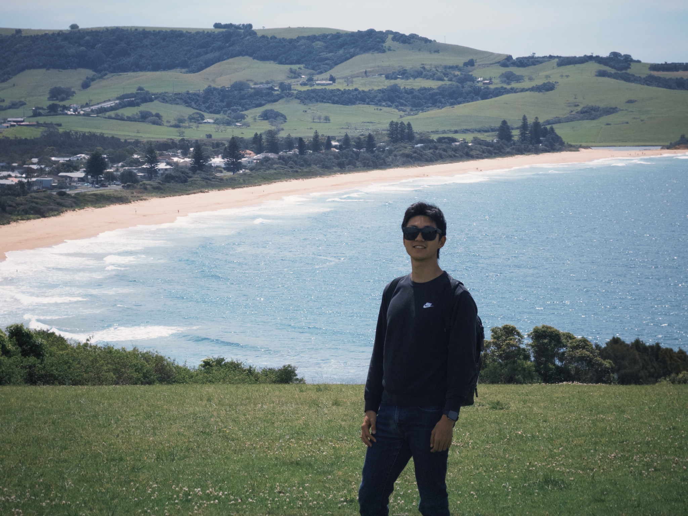

Tsinghua University
M.S. in Electrical Engineering

SPEECH & INTERACTION
I study how machines
listen, understand,
and interact.
01 / ABOUT ME
I'm a master's student at Tsinghua University, studying speech language models, full-duplex dialogue, and the evaluation of intelligent agents.
I also work on spoken dialogue evaluation at ByteDance. Before that, I studied at Tsinghua and spent a year at UC Berkeley.
M.S. in Electrical Engineering
Research Intern · Full-duplex dialogue
B.E. in Electrical Engineering
Exchange student · EECS
Away from the screen: ultimate frisbee, piano, reading, and meditation.
02 / SELECTED WORK
PREPRINT · 2026
Evaluating how voice interfaces preserve the instructions that computer-use agents need.